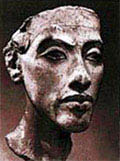

главная  персоналии
персоналии  Эхнатон
Эхнатон
главная |

Личность в историикраткая энциклопедияПроект «Личность в истории» посвящен людям — современникам грандиозных исторических событий, носителям редких качеств или людям, взгляды которых опередили их время. |
|||||||||||||||||
Коротко |
Статьи |
Персоналии |
Литература |
||||||||||||||
Эхнатон |
|||||||||||||||||
|
Озаряется земля, когда ты восходишь на небосклоне; «Большой гимн Атону» (фрагмент) |

Гипсовый слепок со скульптурной головы Эхнатона. |
||||||||||||||||
Биографическая справкаАменхотеп IV (Эхнатон) (XIV в. до н. э.), фараон XVIII династии, реформатор. Стремясь ослабить жречество и номовую знать, Аменхотеп IV, опираясь на мелких и средних землевладельцев, провёл религиозную реформу, отменив культ старых богов, и ввёл культ единого бога солнца — Атона. Фактически это было поклонение солнечному диску. Свою резиденцию Аменхотеп IV перенёс в построенный им город Ахетатон («Горизонт Атона») (современая Эль-Амарна) и принял новое имя Эхнатон, что значит «угодный Атону». После смерти Эхнатона при фараонах Тутанхамоне и Хоремхебе жречество и знать добились восстановления старой религии, а столица Ахетатон была заброшена. Сохранилось множество скульптурных образцов этой эпохи, среди которых портреты супруги Эхнатона царицы Нефертити, одной из красивейших женщин своего времени. Хронология
Цитаты«Ты сияешь прекрасно на небосклоне, диск живой, начало жизни! Ты взошел на восточном склоне неба и всю землю нисполнил своею красою. Ты прекрасен, велик, лучезарен! Ты высоко над всей землею! Лучи твои объемлют все страны, до пределов созданного тобою.» (Гимн Богу Атону. Фрагмент. «Создал ты небо далекое, чтобы восходить на нем, чтобы смотреть на все созданное тобой. (Гимн Атону. Фрагмент текста из гробницы Эйе. «Царь появился на большой колеснице из электриума, подобный Атону, когда он сияет в своей Стране Света и наполняет землю своей любовью… Земля была в ликовании и все сердца радовались, когда царь принес великое приношение своему отцу – приношение пива, хлеба, мяса длиннорогих и короткорогих быков, птицы, вина, фруктов, благовоний, воды, овощей». (??з текстов пограничных стел Ахетатона. «Я — немху по отцу и по матери. Создал меня властитель. Дал он, чтобы я стал … а [прежде] я был неимущим. Дал он, чтобы выпали мне на долю люди [многие]. Возвеличил он моих братьев, дал он, чтобы заботились (?) обо мне все мои люди. Когда я стал владыкой селения, он дал, чтобы я соединил [должности] вельмож и «друзей», а [прежде] я был из последних. Давал он мне пищу и довольствие ежедневно, а [прежде] я [просил] хлеба.». (Надпись из гробницы вельможи Маи. Фрагмент. «Дозволь мне целовать священную землю, шествовать впереди тебя с приношениями для Атона, твоего отца, которые суть дары твоего КА. Дозволь, чтобы мое КА жило и процветало ради меня… Чтобы мое имя произносилось в священном месте по твоей воле, а я оставался бы твоим любимцем, который повсюду следует за твоим КА, чтобы я пребывал в милости твоей, когда наступит старость». (Текст из гробницы Эйе. «Эхнатон и Нефертити появились под большим балдахином из светлого золота, чтобы принять приношения Стран Хаару и Куша, Запада и Востока. Даже острова, (что находятся) в середине моря, прислали свои приношения царю, который воссел на великом троне Ахетатона, чтобы принять приношения всех стран». (Текст из гробницы Хуйи. Статьи
Список литературы
|
|||||||||||||||||
|